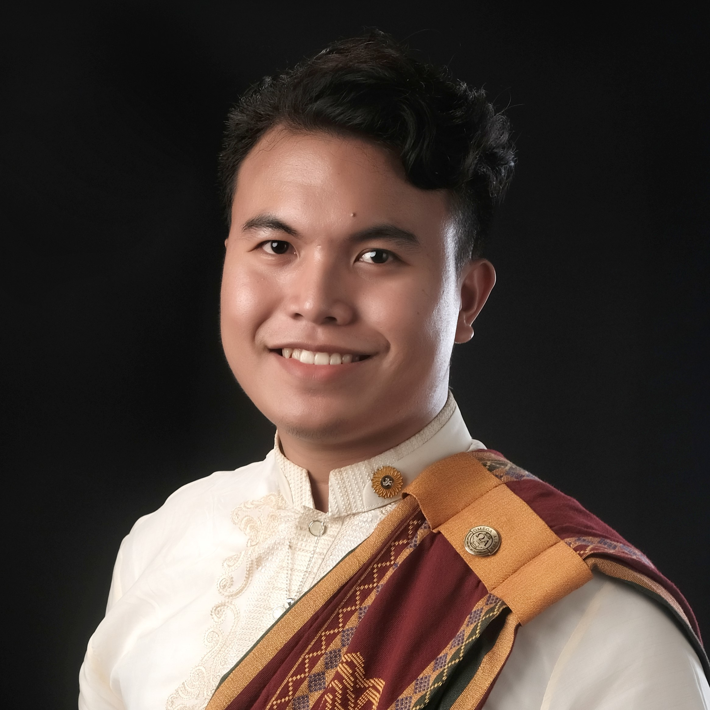

|  | FEDERICO D. CALO
I am what I am.I am a person who is positive about every aspect of life. There are many things I like to do, to see, and to experience. I like to read, I like to write; I like to think, I like to dream; I like to talk, I like to listen. I like the view..You do?..Yes!..You're my best view..NGEE! |
| November 22-23, 2019 | 44th University of the Philippines Regional Alumni Institute |
| August 15, 2019 | World Expert Lecture Series with Dr. Joel Cuello from the University of Arizona. Topic: Research and Development |
| August 17-18, 2019 | Affirmative Action Program for Public Senior High Students in Davao |
|
|